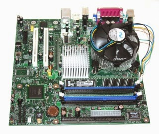

son los componentes físicos dentro de la carcasa de un dispositivo (CPU, RAM, placa base, almacenamiento) que ejecutan las órdenes y procesan datos, permitiendo que la computadora funcione, se ejecuten programas y se guarden archivos, siendo fundamental para el rendimiento y la capacidad del equipo
Actualizar el hardware de tu PC es esencial para mejorar su rendimiento, haciendo el sistema más rápido y responsivo al actualizar componentes clave como la CPU, RAM o una SSD. Si buscas adentrarte en el mundo de los videojuegos modernos o la creación de contenido profesional (diseño gráfico, edición de video), una GPU potente es una adición fundamental. Además de la mejora de velocidad y capacidades gráficas, puedes ampliar el almacenamiento añadiendo discos duros (HDD) o unidades de estado sólido (SSD) adicionales. Finalmente, el conocimiento del hardware interno te permite personalizar completamente el equipo, desde montar tu propio PC hasta reemplazar y reparar componentes dañados, lo que facilita también diagnosticar problemas como cuellos de botella o fallos del sistema.